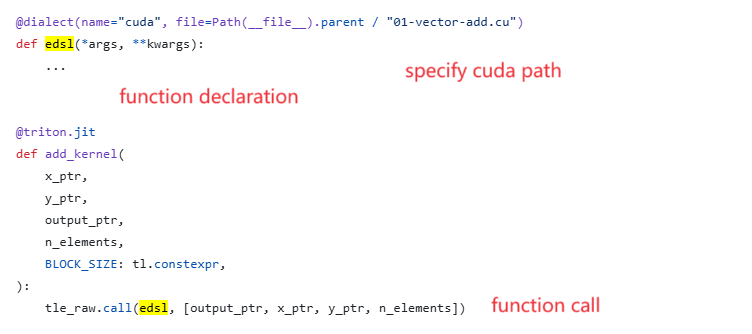
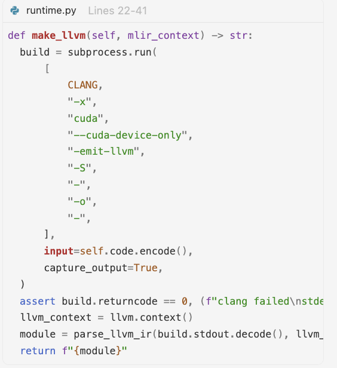
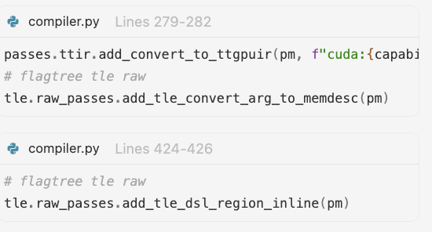

使用 TLE-Raw#
本节介绍如何使用 TLE-Raw。TLE-Raw 在 trition_3.6.x 分支上可用。
TLE Raw 为 Triton 提供了低级扩展接口，允许用户通过第三方方言和语言（例如使用 CUDA 进行线程级调度、同步和内存访问）来填补能力空白并获得细粒度控制。用户可以根据目标硬件和工具链成熟度，在可移植性和可组合优化（通过 MLIR 方言集成）与最大细粒度控制（通过 CUDA 集成）之间进行选择。
将 MLIR 方言集成到 LLVM 中以实现可移植性和可组合优化#
以下是 MLIR（多级中间表示）的示例。
from typing_extensions import Literal as L
from mlir import ir
from mlir.dialects import arith, llvm, nvvm, scf
import torch
import triton
import triton.language as tl
from triton.experimental.tle.raw import dialect, Input
import triton.experimental.tle.language.raw as tle_raw
DEVICE = triton.runtime.driver.active.get_active_torch_device()
@dialect(name="mlir")
def vector_add_tile(
output: Input[L["!llvm.ptr<1>"]],
x: Input[L["!llvm.ptr<1>"]],
y: Input[L["!llvm.ptr<1>"]],
n_elements: Input[L["i32"]],
):
tidx = nvvm.read_ptx_sreg_tid_x(ir.IntegerType.get_signless(32))
bdimx = nvvm.read_ptx_sreg_ntid_x(ir.IntegerType.get_signless(32))
gdimx = nvvm.read_ptx_sreg_nctaid_x(ir.IntegerType.get_signless(32))
bidx = nvvm.read_ptx_sreg_ctaid_x(ir.IntegerType.get_signless(32))
tidx = arith.index_cast(ir.IndexType.get(), tidx)
bdimx = arith.index_cast(ir.IndexType.get(), bdimx)
gdimx = arith.index_cast(ir.IndexType.get(), gdimx)
bidx = arith.index_cast(ir.IndexType.get(), bidx)
idx = arith.addi(arith.muli(bidx, bdimx), tidx)
step = arith.muli(bdimx, gdimx)
n_elements = arith.index_cast(ir.IndexType.get(), n_elements)
for i in scf.for_(idx, n_elements, step):
i = arith.index_cast(ir.IntegerType.get_signless(32), i)
ptrty = ir.Type.parse("!llvm.ptr<1>")
f32ty = ir.Type.parse("f32")
xptr = llvm.getelementptr(ptrty, x, [i], [-2147483648], f32ty, 0)
yptr = llvm.getelementptr(ptrty, y, [i], [-2147483648], f32ty, 0)
xval = llvm.load(f32ty, xptr)
yval = llvm.load(f32ty, yptr)
outval = arith.addf(xval, yval)
outptr = llvm.getelementptr(ptrty, output, [i], [-2147483648], f32ty, 0)
llvm.store(outval, outptr)
scf.yield_([])
@triton.jit
def add_kernel(
x_ptr,
y_ptr,
output_ptr,
n_elements,
BLOCK_SIZE: tl.constexpr,
):
tle_raw.call(vector_add_tile, [output_ptr, x_ptr, y_ptr, n_elements])
def add(x: torch.Tensor, y: torch.Tensor):
output = torch.empty_like(x)
assert x.device == DEVICE and y.device == DEVICE and output.device == DEVICE
n_elements = output.numel()
grid = lambda meta: (triton.cdiv(n_elements, meta["BLOCK_SIZE"]), )
add_kernel[grid](x, y, output, n_elements, BLOCK_SIZE=1024)
return output
if __name__ == "__main__":
x = torch.randn(2048, device=DEVICE)
y = torch.randn(2048, device=DEVICE)
z = add(x, y)
assert torch.allclose(x + y, z), (x + y, z)
TLE-raw 由以下部分组成：
方言声明（装饰器）
装饰器: @tle.raw.language(name=“mlir”)
说明: 此装饰器将函数 vector_add_tile 标记为直接用 MLIR 方言编写的代码块。它告诉编译器（具体通过 FlagTree EDSL（嵌入式领域特定语言）），该函数体应使用 MLIR 操作（如 nvvm、arith 和 tensor）来解释和下层，而不是标准的 Python 或 Triton 操作。
函数实现
函数: vector_add_tile(…)
说明: 这是使用低级 MLIR Python 绑定编写的计算内核的实际实现。它定义了将由硬件执行的具体操作（线程索引、内存加载、浮点加法和内存存储）。
函数调用
调用: tle_raw.call(vector_add_tile, args=[x, y, output])
说明: 此行从高级 Triton 内核（add_kernel）中调用已声明的 MLIR 函数（vector_add_tile）。它传递输入张量 x、y 和输出缓冲区。关键是，它提供了硬件映射提示（定义线程数量）和内存布局规范（定义张量驻留在”shared”内存中并具有特定顺序）。这使得编译器能够弥合高级 tl.load/tl.store 操作与低级 MLIR IR 生成之间的差距。
将 CUDA 集成到 LLVM 中以实现最大细粒度控制#
本节仅介绍如何将 CUDA 内核集成到 LLVM 内联路径中。将其他厂商集成到 LLVM 内联路径中可以遵循类似的步骤。
TLE-Raw 通过 LLVM 内联路径支持 CUDA 内核集成。在 CUDA 侧集成 TLE-Raw 的厂商应评估：
clang 是否能生成 LLVM IR 并将其序列化为文本
TTGIR 相关的 pass 操作是否可以重用或适配
LLVM 路线#
基本流程：使用 clang 将 CUDA 代码转换为 LLVM IR，然后应用现有的 LLVM 内联 pass。

使用示例#
参考:
python/tutorials/tle/raw/cuda/01-vector-add.pyTriton 侧: 提供 CUDA 文件路径和函数声明。其他厂商可以注册自己的语言名称作为
name参数的值。
CUDA 侧: 实现 CUDA 内核。LLVM 结构体参数声明仍然保留（因为后续内联需要处理 Triton ptr 到 LLVM 的转换，目前留给用户进行一对一映射）。其他厂商应根据自己的语言自定义映射。
使用 NVSHMEM 进行多卡通信#
NVSHMEM 是 NVIDIA 提供的 PGAS（Partitioned Global Address Space）通信库，为多卡/多节点程序提供统一地址空间：每张 GPU 上的一块内存（对称内存）既可以被本卡访问，也可以被其他 GPU 直接访问，因此跨卡通信可以用普通的 load/store 或 put/get 语义表达，而不必显式编写点对点收发逻辑。它提供主机端与设备端两套 API，设备端接口可在 kernel 内部直接调用，常用于 all-gather、all-reduce、GEMM + 通信融合等场景。NVSHMEM 仅用于 NVIDIA 卡；TLE-Lite 和 TLE-Struct 的分布式原语走的是 FlagCX，不使用 NVSHMEM。
@dialect 在 CUDA 集成的基础上新增 library 与 compiler 参数，用于把 NVSHMEM 设备端接口直接内联进 TLE-Raw kernel：
@dialect(
name="cuda",
library="nvshmem",
compiler="clang",
file=(Path(__file__).parent / "simple-shift-device.cu"),
extern_func_name="simple_shift",
)
def simple_shift(*args, **kwargs):
...
library="nvshmem"：启用 NVSHMEM 设备端 bitcode 链接（libnvshmem_device.bc，NVSHMEM 3.7 及以上按 SM 拆分时自动选择对应.bc），并在 kernel 上注册 NVSHMEM cumodule init hook，使设备端 NVSHMEM 调用可以正常初始化。compiler="clang"：使用 clang 以--cuda-device-only编译file指定的.cu源文件。file/extern_func_name：与 CUDA 集成一致，分别指定设备端源文件与其中的函数符号。
调用方式与 CUDA 集成相同，通过 tle_raw.call 从 Triton kernel 中调用：
@triton.jit
def simple_shift_kernel(destination_ptr):
tle_raw.call(simple_shift, [destination_ptr])
NVSHMEM 相关的 host 侧准备工作由 triton.experimental.tle.raw.nvshmem.utils 提供：
init_torch_distributed()/init_nvshmem_by_torch_pg(common, group)：基于 PyTorch 进程组初始化 torch.distributed 与 NVSHMEM。load_host(source)/load_common_host(source=None)：编译并加载 host 侧.cu（含nvshmem.h、nvshmemx.h），返回可直接调用其中extern "C"函数的库对象。tensor_from_pointer(pointer, shape, dtype, device)：在 CUDA 显存上创建非拥有的 Torch tensor 视图。copy_on_stream(dst_ptr, src_ptr, nbytes, stream)、set_signal_cuda_ptr(signal_ptr, signal, stream)：流上的拷贝与 signal 指针设置。print_perf(...)/print_perf_mean(...)：按 rank 汇总打印性能数据。enable_nvshmem_device_bc(enabled=True)/is_nvshmem_device_bc_enabled()/get_nvshmem_extern_libs(arch=None)：设备端 bitcode 链接开关与外部库查询（library="nvshmem"会自动开启）。
使用前需要满足：
设置
NVSHMEM_HOME环境变量（或通过triton.knobs.nvidia.nvshmem_home指定），用于解析libnvshmem_host.so与设备端 bitcode。示例面向 sm90 及以上架构，且要求
world_size >= 2；多卡启动时通过RANK、LOCAL_RANK、WORLD_SIZE、LOCAL_WORLD_SIZE传入拓扑。
完整示例见 python/tutorials/tle/raw/nvshmem/：
01-simple-shift：最小的 NVSHMEM 设备端 put 示例，演示 dialect 声明与 host/device 两侧的配合。02-allgather-gemm：基于 NVSHMEM 的 all-gather GEMM（含 benchmark）。03-gemm-allreduce：基于 NVSHMEM multimem 的 GEMM + all-reduce。04-cuda-ipc-allreduce：基于 CUDA IPC 的 all-reduce（含 benchmark），使用不带library="nvshmem"的 CUDA 方言。
处理流程#
前端: CUDA-LLVM 集成到 Triton 前端和运行时#
步骤 |
模块 |
关键 Pass 开发 |
|---|---|---|
方言注册入口（dialect 装饰器） |
|
- 维护 |
TTIR 扩展: |
|
- 接受 Triton 参数； |
CUDA 运行时: 实际调用 clang 的位置 |
|
-  |
中端: Python 到 C++，MLIR pass 关系和 pass 继承#
步骤 |
模块 |
关键 Pass 开发 |
|---|---|---|
将 LLVM 函数附加到 |
|
- |
C++ 桥接: IR 注入和类型桥接 |
|
- |

{kind=link}
{kind=link}
{kind=link}
后端: CUDA-LLVM IR 转换 — 参数处理和 Triton/TLE-Raw 数据桥接#
步骤 |
模块 |
关键 Pass 开发 |
|---|---|---|
后端 pass 注册 |
|
-  |
参数桥接 |
|
- 将 |
LLVM 内联准备 |
|
- 从 region op 内联 |
{kind=link}
语义对象映射#
语义对象 |
Triton 侧 |
TLE-Raw 侧 |
LLVM 侧 |
|---|---|---|---|
标量参数 |
|
直接作为 |
LLVM 标量参数 |
指针参数 |
|
直接传递或提取为 LLVM ptr |
|
张量输入 |
|
转换为 |
展开为 allocated/aligned/offset/sizes/strides |
张量输出 |
|
|
LLVM 结构体或多返回字段，然后重新打包 |